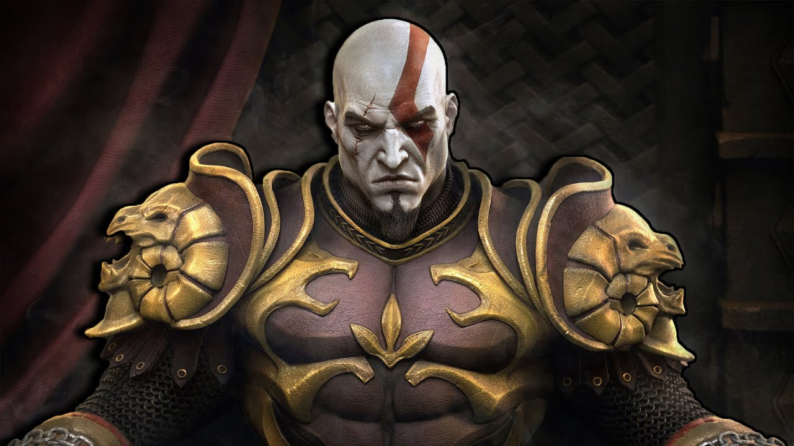
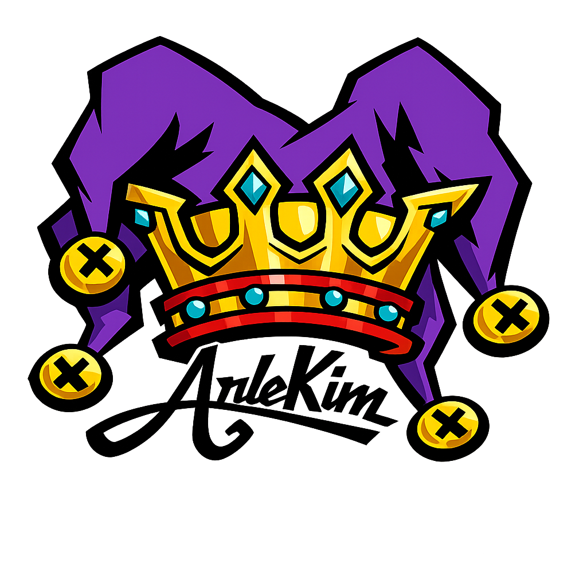
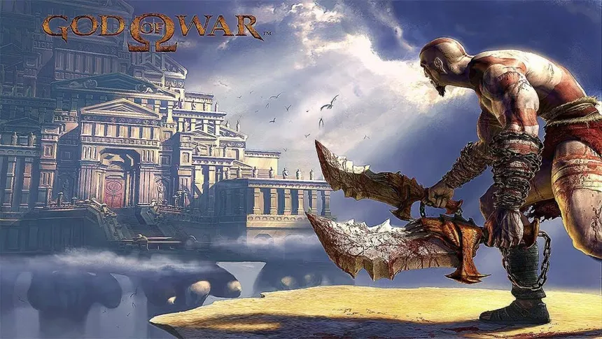

God of War 2

Resumo do post sobre God of War 2.
Ler mais
Carregando memórias desde o primeiro save.

Resumo do post sobre God of War 2.
Ler mais
Pra mim, God of War 1 no PS2 é aquele jogo que marcou época. Era ação sem enrolação, combate brutal e chefes gigantes que realmente impressionavam. Controlar Kratos era simplesmente satisfatório. É um daqueles jogos que eu zero com orgulho e que, na minha opinião, ajudou a definir o que foi o PS2.
Ler mais